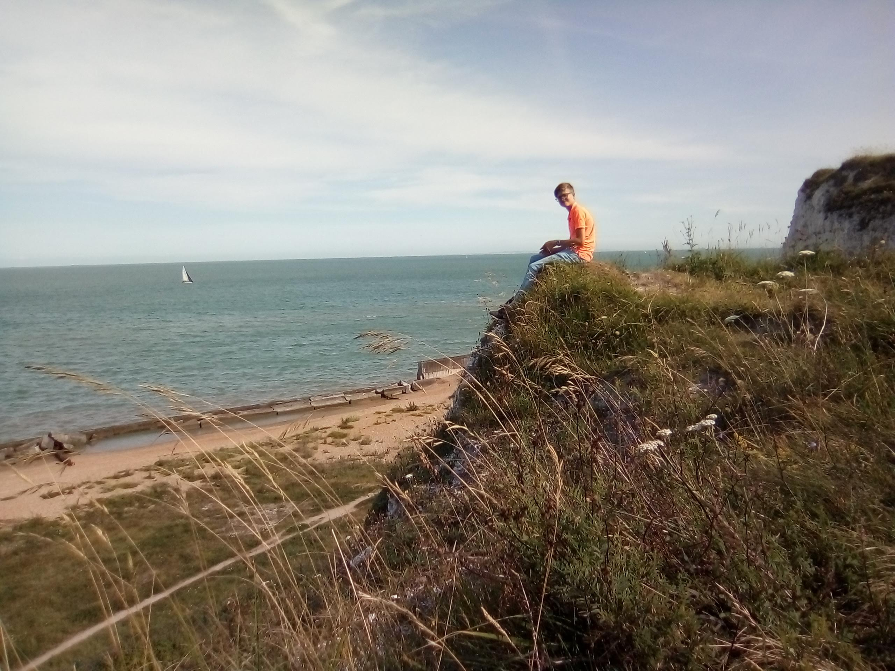

Who am i?
Personal information
Name: Laurens Agteresch
Age: 18
Residence: Aagtekerke


Extra-Carricular Activities
Hobby's: Programming, Gaming, Tinkering with computers
Work: Albert Heijn Domburg
Characteristics
-
Independent
-
Curious
-
Determined
-
Calm